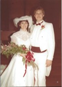

The Kleinsorge Family Tree - Family Card
The Kleinsorge Family Tree - Family Card
KLEINSORGE, Paul Henry(Jan 26, 1928 - Jan 6, 2014)
ZAWACKI, Agnes Lillian(Mar 10, 1930 - Oct 6, 1987)
m. Nov 26, 1983, Overland Park, Kansas

b. Apr 22, 1959, Kansas City, Kansas
d. Jun 19, 2015, Kansas City, Kansas
ado.

b. Sep 17, 1958, Reno, Nevada
d.
ado.
Children
KLEINSORGE, Kale Charles(Feb 11, 1991 - )
KLEINSORGE, Weston Paul(Apr 26, 1993 - )